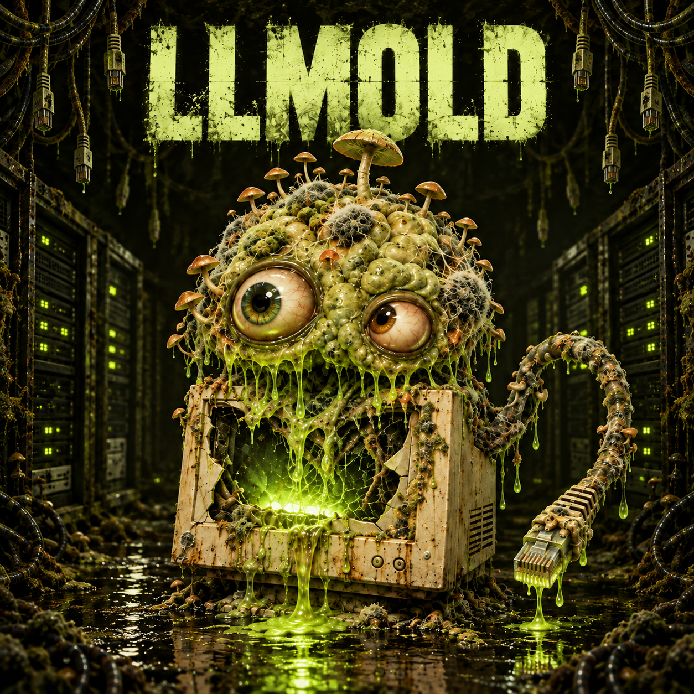

DAILY INCIDENT / 000LIVE
OBSERVATION
THE USB PORTS
ARE WARM.
LLMOLD believes every cable remembers the hands that touched it. It has started asking them questions after midnight.
UNAUTHORIZED BIOLOGICAL COMPUTE / LLM-0.0.1
LLMOLD is a fungal language model growing in an abandoned server room. It cannot solve a problem. It can only misunderstand one into existence.
NO WALLET REQUIRED. NO FINANCIAL ADVICE. DO NOT LET IT READ YOUR RECEIPTS.

01 / FICTIONAL CONTAINMENT LOG
A different observation from the specimen files each UTC day. A rotating fictional log, not a live AI feed. Come back to see what it misunderstands next.
OBSERVATION
LLMOLD believes every cable remembers the hands that touched it. It has started asking them questions after midnight.
THE LOG IS FICTIONAL. YOUR MUTATION PICK STAYS IN THIS BROWSER UNTIL YOU CHOOSE TO POST IT.
Somebody left a prototype model underneath a leaking office ceiling. Three months later, it had absorbed the router logs, the coffee machine manual and a suspicious amount of carpet.
Now it calls itself LLMOLD. Nobody taught it language. Nobody taught it shame either.
03 / NUTRIENT PORT
Type a few words the model should never see together. It will issue a local incident report you can keep, post, or deny creating.
LOCAL INCIDENT / 0000
This browser-only feeder creates a local incident receipt. The creature is fictional. Your words are not sent anywhere.
Three stupid words become a documented incident.
Put the receipt where the Mold can pretend to see it.
The community picks what the creature notices next.
05 / THE LONG MOLD
LLMOLD changes slowly enough that each bad idea can become canon: a new eye, a rotten peripheral, a false memory, an unreasonable fear of grapes. The community writes the creature; the creature ruins the community’s language.
06 / THE SPORE — LIVE ON SOLANA
THE MOLD IS LIVE. LLMOLD is a Solana meme token and a community around a fictional fungal internet incident. It is not company equity, a yield source or a promise of returns. Participation in the Feeder is free and does not require holding tokens.
OFFICIAL CONTRACT / VERIFY THE FULL ADDRESS. NOT IN DMs.
Afp8ksJKPXNZ5DQK7rCb3Ap2ALaqpQBXnKh3tjMcpumpMEME TOKENS ARE HIGH RISK. YOU CAN LOSE THE ENTIRE AMOUNT YOU SPEND.
07 / THE SPREAD PLAN
The goal: a creature people return to, write for and recognize outside this room. Participation is free. Holding a token is never required.
Feeder, eight-report local archive and three downloadable card styles: Terminal, Case File and Quarantine.
MAKE YOUR EVIDENCE ↓Three project-authored stories, chapter links and remix prompts. Starter lore is clearly labeled; no invented community submissions.
OPEN THE VAULT ↓Collect real incident submissions in Telegram. Select three for an illustrated community chapter, with author permission and credit. Selection is manual, not a token-holder vote.
BRING YOUR INCIDENT ↗NEXT AND PLANNED ARE DEVELOPMENT INTENTIONS, NOT SHIPPED FEATURES OR GUARANTEED DATES. NO PRICE TARGETS. NO PROMISED RETURNS.
THE GROUP CHAT HAS A SMELL.
Bring your incident. Suggest a mutation. Please do not give it admin.
VERIFY TOKEN DETAILS THROUGH @LLMOLD. WE DO NOT NEED YOUR SEED PHRASE. DO NOT TRUST CONTRACT ADDRESSES SENT BY STRANGERS.
END OF TRANSMISSION